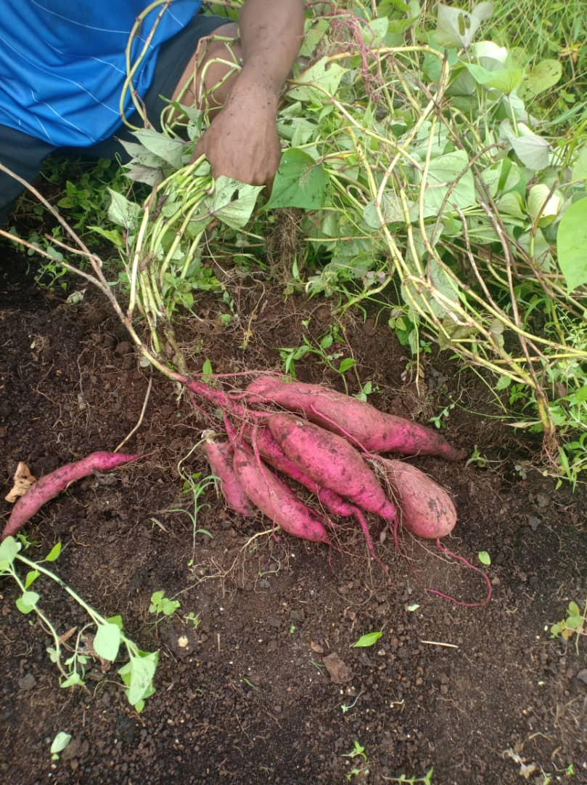
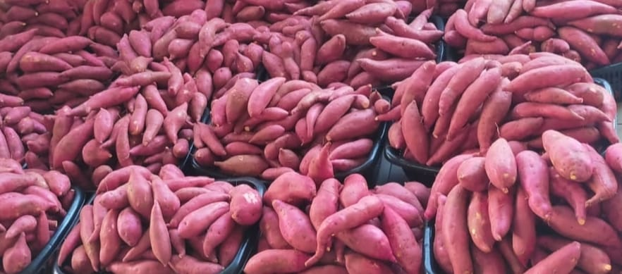
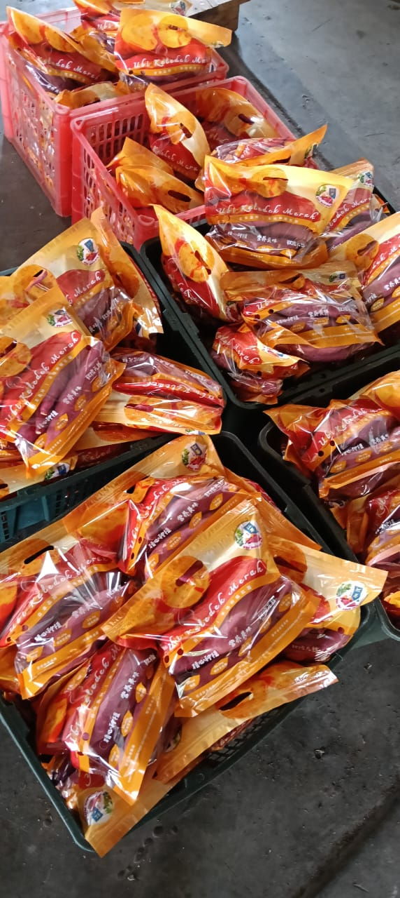
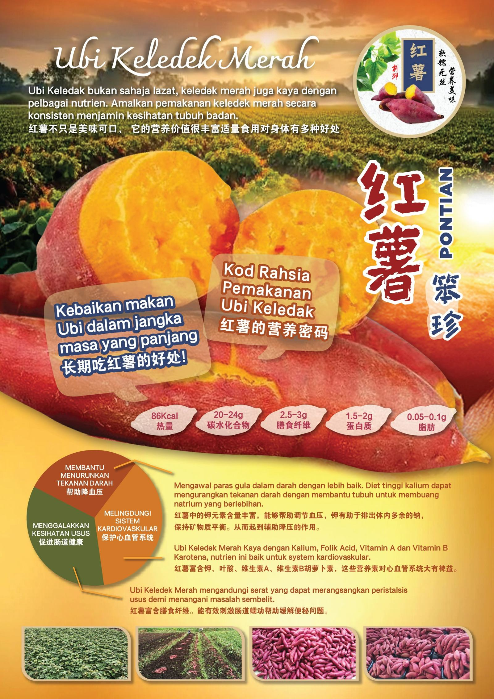

Ubi Keledek Segar
Sesuai untuk masakan di rumah, penyediaan makanan, dan penggunaan harian.
Ubi keledek segar di Malaysia
Sweet Potato Malaysia membantu pelanggan mendapatkan ubi keledek berkualiti untuk masakan harian, perniagaan makanan, penjual semula, dan pembelian borong dengan saluran pertanyaan yang mudah.

Sorotan produk
Laman ini boleh digunakan sebagai halaman pendaratan ringkas untuk pertanyaan ubi keledek, promosi bermusim, dan prospek borong di GitHub Pages.
Sesuai untuk masakan di rumah, penyediaan makanan, dan penggunaan harian.
Untuk acara, perniagaan makanan, penjual semula, dan keperluan bekalan berulang.
Sesuai untuk peruncit, pengedar, dan rakan niaga yang mencari bekalan konsisten, pengesahan lebih cepat, dan keyakinan untuk pembelian berulang.
Kegunaan popular
Ubi keledek sangat serba guna dan mudah dipasarkan kepada pengguna biasa serta perniagaan berasaskan makanan.
Galeri Produk
Lihat imej contoh produk sebagai rujukan awal. Ia boleh diganti pada bila-bila masa dengan foto sebenar ladang, hasil tuaian, pembungkusan, atau foto jualan untuk lebih mencerminkan jenama dan penawaran anda.



Foto Utama
Klik imej di bawah untuk membuka paparan yang lebih besar.

Kawasan liputan
Bekalan ubi keledek segar adalah dari Pontian, Johor. Pesanan runcit dan penghantaran kejiranan tertumpu pada kawasan Johor Bahru dan Pontian, manakala permintaan lebih besar boleh dibincangkan terus melalui WhatsApp.
Tentang laman web
Laman GitHub Pages ini disusun untuk SEO berbilang bahasa dengan tag canonical, hreflang, robots.txt, dan sitemap mengikut bahasa supaya enjin carian dapat memahami setiap versi dengan betul.
Hubungi kami
Hantar pertanyaan anda melalui WhatsApp dan sertakan kuantiti, jenis yang dikehendaki, kawasan penghantaran, atau keperluan perniagaan.
Kongsi laman ini
Jika anda suka laman ini, kongsikan kepada rakan, keluarga, atau kumpulan komuniti setempat menggunakan pautan ringkas di bawah.
bit.ly/pontian-sweet-potato